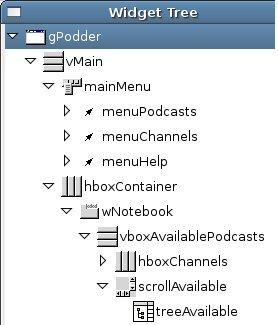

How To Use Python In Maemo
Introduction
This document explains how to develop applications for the Maemo platform using the Python programming language. It considers that you already know Python and PyGTK.
You don't have to be proficient in then, though. Knowing the basics (i.e. being able to write simple GTK programs in Python) should be enough to proceed.
Before Starting
Before starting to write your own Python applications for Maemo you should do the following:
Getting a grasp of what Maemo is
Get acquainted to the maemo platform. Read the section "Overview of maemo platform" from "Maemo SDK Tutorial"1.
Setting up your maemo development environment.
Set up your Maemo development environment, from where you will run your maemo applications. Read the section "Setting up and testing development environment" from "Maemo SDK Tutorial". The entire tutorial considers that you will be developing from Scratchbox instead of directly using a Maemo device (e.g., a Nokia 770).
As maemo rootstrap doesn't come with the necessary python packages, you will have to download them from maemo's repository. Check www.maemo.org to know how to get them. You will need the following extra packages (those are not the actual package names):
- Python itself
- Python XML
- PyGTK - Python bindings for GTK
- python-hildon - Python bindings for Hildon
- python-osso - Python bindings for LibOSSO
A Simple "Hello World!" Application
Let's start by writing a very simple GTK+ application. It justs creates and shows a window with a "Hello World!" in it. It doesn't even quits when the window is closed.
Plain PyGTK
#!/usr/bin/env python2.4
import gtk
if __name__ == "__main__":
window = gtk.Window(gtk.WINDOW_TOPLEVEL)
label = gtk.Label("Hello World!")
window.add(label)
label.show()
window.show()
gtk.main()
Save this in a file called hello_world_1.py. From the scratchbox console, run it with "run-standalone.sh ./hello_world_1.py" (remember to make it executable by running "chmode +x ./hello_world_1.py"). The result should be this:
As you can see, this plain pygtk code already "works" on maemo. But you shouldn't, of course, use plain pygtk code or rely that any pygtk code will also "work" on maemo. In this tiny program, the obvious sign of misfit in the maemo environment is that its borders (skin graphic area) are broken (look its top left and top right corners).
In case you're wondering the reason of using this "run-standalone.sh" to execute apps, try running the example without it.
As you can see, the application will not have Hildon theming. But of course, run-standalone.sh only exists if you're running apps from the scratchbox console.
Hildon Window Class
The HildonWindow overloads the GtkWindow class, providing the Hildon look and feel to top level windows. In order to use the facilities provided by the Hildon framework (and also to integrate nicely in it) an application should use a HildonWindow instead of a GtkWindow. With a HildonWindow an application have, for instance, access to Hildon menus and toolbars.
The code change is then fairly simple. It's just a replace from GtkWindow to HildonWindow (besides importing the hildon module, of course).
#!/usr/bin/env python2.4
import gtk
import hildon
if __name__ == "__main__":
window = hildon.Window()
label = gtk.Label("Hello World!")
window.add(label)
label.show()
window.show()
gtk.main()
Note that the borders are drawn in the right way, as our litle program is now using a HildonWindow.
Hildon Program Class
The HildonProgram is a programmer commodity to apply program-wide settings to all Hildon windows used by an application, like having a common menu and toolbar to all windows. Besides that, HildonProgram also deals with other program-wide affairs like hibernating.
Our very simple "Hello World" application have no use for a HildonProgram object but we can make it have one nonetheless for the sake of showing how a regular Hildon application would be structured.
#!/usr/bin/env python2.4
import gtk
import hildon
class HelloWorldApp(hildon.Program):
def __init__(self):
hildon.Program.__init__(self)
self.window = hildon.Window()
self.add_window(self.window)
label = gtk.Label("Hello World!")
self.window.add(label)
label.show()
def run(self):
self.window.show_all()
gtk.main()
if __name__ == "__main__":
app = HelloWorldApp()
app.run()
You should see exactly the same result as in the previous section.
Porting An Existing Application
In this section, the usual proceedings and issues involved in porting an existing PyGTK application to Maemo are shown.
Following the "learn by example" phylosophy, it's shown here, step by step, the port of a real application. The application chosen was gPodder2 (version 0.6). gPodder fits well as an example because its reasonably simple, has a small, uncluttered, interface and also faces most of the important issues involved in porting PyGTK apps to Maemo.
A good deal of the porting effort is spent making an application use and obey the Hildon UI style (like making use of hardware keys and Hildon specific widgets). So it's a good idea to take a look the Hildon User Interface Style Guide 3 before starting a port.
Installing and Running gPodder in Maemo
After exploding gpodder-0.6.tar.gz (you can download it from here) and entering into the created directory gpodder-0.6, run "python2.4 setup.py install" and then "run-standalone.sh gpodder" (considering that you are running from scratchbox).
It may give some GLib warnings on scratchbox's console but you should see something like the following screen:
This means that gPodder 0.6 works right away on Maemo without any modifications. But it's not a Maemo application yet. There are quite a few steps to make it sit nicely on the Maemo environment. Those steps are covered in the next sections.
gPodder Code Overview
In this section it's shown a brief overview on gPodder's source code. It's just enough to make the code changes in later sections make sense for the reader.
Most of the code changes will be made in gpodder-0.6/src/gpodder/gpodder.py. This file has the following classes:
class Gpodder(SimpleGladeApp)
class Gpodderstatus(SimpleGladeApp):
class Gpodderchannel(SimpleGladeApp):
class Gpodderproperties(SimpleGladeApp):
class Gpodderepisode(SimpleGladeApp):
There's one class for each GtkWindow defined in gpodder-0.6/data/gpodder.glade, as you can see in the image below:
Besides loading the window description from gpodder.glade, SimpleGladeApp also puts all window elements directly accessible from self, ignoring element's hierarchy. Below it's shown part of the element's hierarchy for gPodder window and how to access then from inside a Gpodder method.
|

|
self.vMain
self.mainMenu
self.menuPodcasts
self.menuChannels
self.menuHelp
self.hboxContainer
self.wNotebook
self.vboxAvailablePodcasts
self.hboxChannels
self.scrollAbailable
self.treeAvailable
|
HildonProgram and HildonWindow
The first thing to be done is make gPodder use HildonProgram and HildonWindow instead of GtkWindow.
Begin modifying gpodder.py (at gpodder-0.6/src/gpodder). Since we will now use Hildon stuff we have to import its module:
45 |# for isDebugging:
46 |import libgpodder
47 |
++ |import hildon
++ |
48 |app_name = "gpodder"
49 |app_version = "unknown" # will be set in main() call
Substitute the GtkWindow (self.gPodder) by a HildonApp (self.app) and a HildonAppView (self.appview).
96 | if libgpodder.isDebugging():
97 | print "A new %s has been created" % self.__class__.__name__
++ |
++ | self.app = hildon.Program()
++ |
++ | self.window = hildon.Window()
++ | self.window.set_title(self.gPodder.get_title())
++ | self.app.add_window(self.window)
++ |
++ | self.vMain.reparent(self.window)
++ | self.gPodder.destroy()
++ |
++ | self.window.show_all()
++ |
98 | #self.gPodder.set_title( self.gPodder.get_title())
99 | #self.statusLabel.set_text( "Welcome to gPodder! Suggestions? Mail to: thp@perli.net")
The Gpodder class (self) has its method close_gpodder connected to the signal "destroy" from the original gPodder Gtk window. So, we have to remove this connection from gPodder and put it in our new Hildon window (self.window).
To remove the signal connection from the original gPodder Gtk window we have to open the file gpodder.glade (at gpodder-0.6/data) and remove it from there, as the next image shows:
Now we connect Gpodder.close_gpodder to our new HildonApp (self.app):
101 | self.window = hildon.Window()
102 | self.window.set_title(self.gPodder.get_title())
++ | self.window.connect("destroy", self.close_gpodder)
103 | self.app.add_window(self.window)
104 |
105 | self.vMain.reparent(self.window)
The change from GtkWindow to HildonProgram/HildonWindow is now complete and if you run gPodder again you should see something like that:
Note that the window now fits nicely in the screen having no "broken" borders, as was also the case with the "Hello World" application. The next step is to fix the menu.
Menu
Here we will make gPodder use Hildon's title area as its menu bar, instead of using his own GTK+ menu (a GTKMenuBar object).
If you look in gpodder.glade, you will see that the window gPodder has a menu bar (a GTKMenuBar object) called mainMenu. We must move all its children (menuPodcasts, menuChannels and menuHelp) to our HildonAppView's menu and destroy this then empty menu (mainMenu).
This is a straightforward operation. You just have to add the following lines in gpodder.py:
106 | self.vMain.reparent(self.window)
107 | self.gPodder.destroy()
++ |
++ | menu = gtk.Menu()
++ | for child in self.mainMenu.get_children():
++ | child.reparent(menu)
++ | self.window.set_menu(menu)
++ |
++ | self.mainMenu.destroy()
108 |
109 | self.window.show_all()
After adding those lines that should be the result:
Using Hildon Widgets
Hildon has a set of widgets for common operations like color selection dialog, a file chooser dialog, a time picker, etc. Most of then provides the same functionality (or extends) as existing GTK+ widgets. e.g.: HildonFileChooserDialog has the same purpose as GtkFileChooserDialog.
You should replace GTK+ widgets with Hildon ones whenever it's possible, since they were designed obeying to Maemo's restrictions and peculiarities.
gPodder uses a GTK+ file chooser dialog when the users exports his channel list. We have to make it use a HildonFileChooserDialog instead. In order to do this the following code must be changed in python.py:
458 | self.showMessage( "Your channel list is empty. Nothing to export.\n\nGo add some fancy channels! :)")
459 | return
460 -- | dlg = gtk.FileChooserDialog( title="Export to OPML...", parent = None, action = gtk.FILE_CHOOSER_ACTION_SAVE)
++ | dlg = hildon.FileChooserDialog(self.window, gtk.FILE_CHOOSER_ACTION_SAVE);
461 -- | dlg.add_button( gtk.STOCK_CANCEL, gtk.RESPONSE_CANCEL)
462 -- | dlg.add_button( gtk.STOCK_SAVE, gtk.RESPONSE_OK)
463 | response = dlg.run()
464 | if response == gtk.RESPONSE_OK:
And here is what you should now see when you click Menu > Channels > Export List:
Adjusting the interface to fit into the small screen
Here its shown the necessary tweaks to be made in the interface layout to make it fit into the relatively small Maemo screen.
Main window (gPodder)
Make tab names shorter. Replacing "Downloaded Podcasts" with only "Downloaded" is enough to make tab names stay within screen boundaries.
gPodder Channel Editor Dialog (gPodderChannel)
In gPodderChannel, increase its "Default Width" to 700 and its "Default Height" to 350.
In gPodderChannel->[...]->table1->scrolledWindow3 change "V Policy" and "H Policy" to "Automatic".
Using Hardware Keys
Maemo applications should try to use the available hardware keys to improve their usability. Not every application will have use for all hardware keys, of course, but you should try to use those that makes sense in your application nonetheless.
The "Full screen" hardware key is particularly useful, since screen size is one of the key issues to Maemo applications and even more to desktop applications that are being ported to Maemo (like gPodder).
To implement the full screen functionality we will have to monitor two more window signals:
- Key presses, so that we can know when the "Full screnn" key is pressed.
- Window state changes, so that we can know whether the window is already in full screen mode or not.
Connecting these two signals (gpodder.py):
102 | self.window.set_title(self.gPodder.get_title())
103 | self.window.connect("destroy", self.close_gpodder)
++ | self.window.connect("key-press-event", self.on_key_press)
++ | self.window.connect("window-state-event", self.on_window_state_change)
++ | self.window_in_fullscreen = False #The window isn't in full screen mode initially.
104 | self.app.add_window(self.window)
105 |
106 | self.vMain.reparent(self.window)
on_window_state_change implementation:
648 | self.showMessage( "Could not delete selected item.\nHave you selected an episode to delete?")
649 | #-- Gpodder.on_btnDownloadedDelete_clicked }
++ |
++ | def on_window_state_change(self, widget, event, *args):
++ | if libgpodder.isDebugging():
++ | print "on_window_state_change called with self.%s" % widget.get_name()
++ |
++ | if event.new_window_state & gtk.gdk.WINDOW_STATE_FULLSCREEN:
++ | self.window_in_fullscreen = True
++ | else:
++ | self.window_in_fullscreen = False
650 |
651 |
652 |class Gpodderstatus(SimpleGladeApp):
on_key_press implementation:
657 | else:
658 | self.window_in_fullscreen = False
++ |
++ | def on_key_press(self, widget, event, *args):
++ | if libgpodder.isDebugging():
++ | print "on_key_press called with self.%s" % widget.get_name()
++ |
++ | if event.keyval == gtk.keysyms.F6:
++ | # The "Full screen" hardware key has been pressed
++ | if self.window_in_fullscreen:
++ | self.window.unfullscreen ()
++ | else:
++ | self.window.fullscreen ()
659 |
660 |
661 |class Gpodderstatus(SimpleGladeApp):
Note that the hardware key "Full screen" maps to the F6 key on GDK. The image below shows gPodder in full screen mode:
LibOSSO Tutorial
LibOSSO is the basic library containing required and helpful functions for maemo applications. One of LibOSSO's main features are RPC (Remote Procedure Calls) services (as it "wraps" D-BUS4). Besides that, LibOSSO also provides access to low level hardware functionalities like turning the display on (or keeping it on), autosaving, state saving, system time, etc.
All maemo-compliant applications should use LibOSSO to respond coherently to system changes and signals like, battery low signal, pre-shutdown signal, state saving, etc.
This tutorial shows how to do remote procedure calls using LibOSSO. It's divided in two different sample applications: osso_test_sender.py and osso_test_receiver.py.
The sender sample app, as its name says, sends a RPC message at the click of a button. D-BUS interprets this message and send the RPC to our receiver sample app, that then diplays a system notification stating that it has reveived the RPC.
Sender Sample Application
The sender is just a button occupying the whole window. When you click it, a RPC is sent to our receiver sample application.
Put the following code in a file called osso_test_sender.py.
#!/usr/bin/python2.4
import osso
import hildon
import gtk
def send_rpc(widget, osso_c):
osso_c.rpc_run("spam.eggs.osso_test_receiver", "/spam/eggs/osso_test_receiver",
"spam.eggs.osso_test_receiver", "do_something")
print "RPC sent"
osso_c = osso.Context("osso_test_sender", "0.0.1", False)
window = hildon.Window()
window.connect("destroy", gtk.main_quit)
send_button = gtk.Button("Send RPC")
window.add(send_button)
send_button.connect("clicked", send_rpc, osso_c)
window.show_all()
gtk.main()
Receiver Sample Application
The receiver is an application that has no GUI (i.e., no window), it just lurks "behind the scenes" waiting for a RPC. When it finnaly receives one, it uses LibOSSO to diplay an information banner notifying the user that it happened.
Put the following code in a file called osso_test_receiver.py.
#!/usr/bin/python2.4
import osso
import gtk
def callback_func(interface, method, arguments, user_data):
print "RPC received"
osso_c = user_data
osso_c.system_note_infoprint("osso_test_receiver: Received a RPC to %s." % method)
osso_c = osso.Context("osso_test_receiver", "0.0.1", False)
print "osso_test_receiver started"
osso_c.set_rpc_callback("spam.eggs.osso_test_receiver", "/spam/eggs/osso_test_receiver",
"spam.eggs.osso_test_receiver", callback_func, osso_c)
gtk.main()
The receiver also needs to register itself as a D-BUS service, so you will need to put a osso_test_receiver.service file in /usr/share/dbus-1/services. The content of this file should be the following:
[D-BUS Service]
Name=spam.eggs.osso_test_receiver
Exec={SOME_DIRECTORY_HIERARCHY}/osso_test_receiver.py
Note that {SOME_DIRECTORY_HIERARCHY} must be replaced by the directory where osso_test_receiver.py is located.
Running the Applications
Before doing anything we have to make sure that D-BUS is recognizing our new D-BUS service (spam.eggs.osso_test_receiver). To do this the easiest way is to restart our maemo environment, typing the following on Scratchbox's console:
[sbox-TARGET_NAME: ~] > af-sb-init.sh restart
Now you can run osso_test_sender.py (considering that it's in your home directory):
[sbox-TARGET_NAME: ~] > run-standalone.sh ./osso_test_sender.py
Then every time you click the "Send RPC" button you should see something like this:
Note that you don't have to manually run osso_test_receiver.py as it's done automatically by D-BUS. Also (due to its extreme simplicity), once instanciated, osso_test_receiver.py will keep running in background until you manually kill it from Scratchbox's console.
Distributing your Python applications
To distribute your application you have to create a Maemo package for it. The next sections explains how it's done.
Code Changes
Differently from our Scratchbox environment, in actual Maemo devices all files must be installed under /var/lib/install/ directory. /var/lib/install/ works as a fake root directory, so if you were previously installing foo file into /usr/bin/, you will now install it into /var/lib/install/usr/bin.
This means that, for instance, all *.py executable files will have to suffer the following change:
01 -- |#!/usr/bin/env python2.4
++ |#!/var/lib/install/usr/bin/env python2.4
Extra Packages
As Maemo devices doesn't come with Python by default, the necessary Maemo Python package must also be installed on it. You can get it from www.maemo.org.
Creating the Maemo Package
The creation of Maemo packages for Python applications is the same as for regular applications. Follow the instructions from "How to deploy applications" section of "Maemo SDK Tutorial" 1.
References
[1] Maemo SDK Tutorial: http://www.maemo.org/platform/docs/tutorials/Maemo_tutorial.html
[2] gPodder project page: http://perli.net/projekte/gpodder/index.html
[3] Hildon User Interface Style Guide (version 1.0): http://www.maemo.org/community/UI_Style_Guide_Summary_1.0.pdf